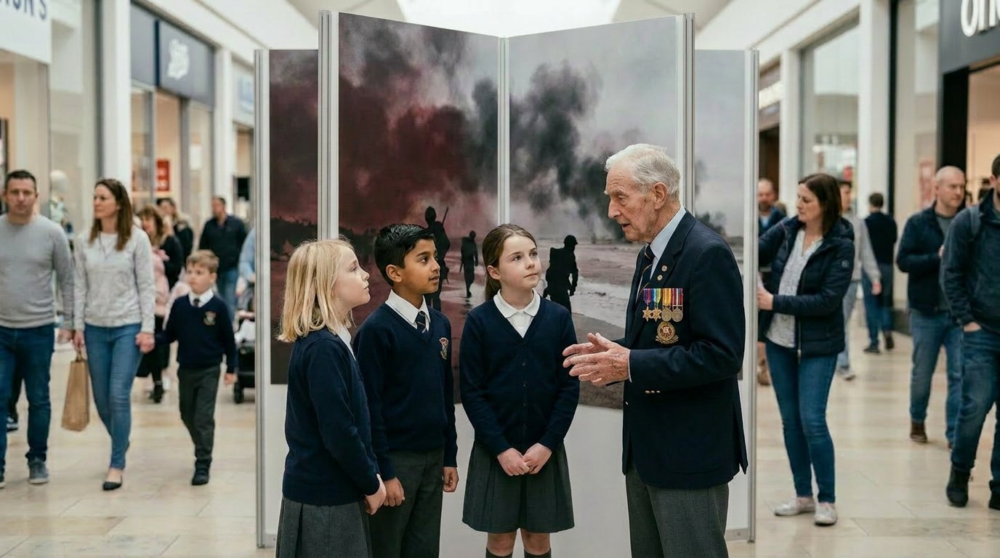
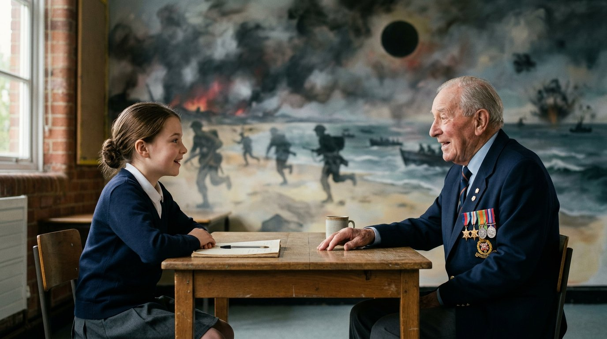
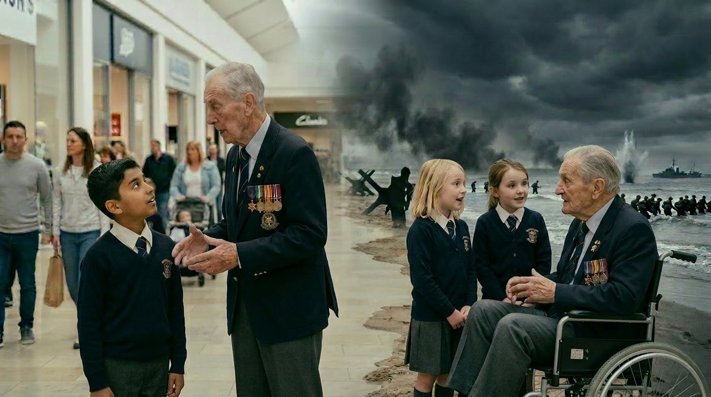
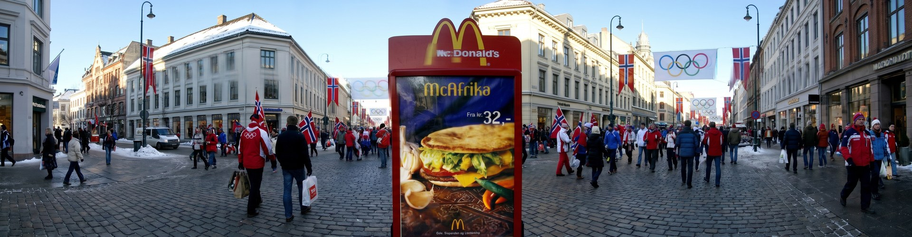

About this Playbook: This use case involved MUVIST’s co-founder Paula Lain in a consulting role and has been adapted as a teaching resource. Individual names and specific institutional roles from the source version have been removed for this educational edition.
This companion guide helps you apply the movement marketing principles in Module 2, story, supporter journeys and invitation language, to your own organisation.
A national community history programme transformed commemoration into participation by using touring exhibitions, local partners and lived stories rather than relying on promotion alone.
Instead of pushing out a one way heritage message, the programme invited audiences to learn, share stories and connect across generations, turning remembrance into a two way movement built on lived experience and personal testimony.
The Challenge
A National UK Museum specialising in war history wanted to connect younger generations with people who had lived through the Second World War, not just with dates and displays. Commemorative programmes often fade after big anniversaries and traditional exhibitions mainly attract existing museum audiences. Younger people in particular can find history distant unless there is a personal connection, so the question was how to make remembrance meaningful, accessible and shareable across generations.
Once that belief was clear, activity could be organised around it rather than around a single anniversary date.
The programme reached new audiences well beyond core museum visitors and demonstrated that when people are invited into a living story - as learners, as listeners, as connectors between generations - remembrance can behave more like a movement than a one-off event.
The Movement Marketing Shift
| Old Campaign Thinking | New Movement Thinking |
|---|---|
| Tell people to remember (broadcast commemorations, passive audience, time‑boxed attention). | Invite people to learn, meet and contribute (participation loops, intergenerational connection, assets that keep working). |
| Focus on one‑way messages about remembrance. | Make intergenerational contact the core aim, bringing young people and WWII veterans together to talk, learn and commemorate. |
| Design exhibitions mainly for existing museum‑type audiences. | Design a touring exhibition to appeal to a wide range of visitors, including museum non‑attenders, with learning as the core function and clear signposting to further resources. |
The Team to Build It
The project involved programme leadership, communications, external consultancy and local delivery partners working together.
Client & Programme Ownership
National community history and education programme, delivered through multiple country partners and 148 local authorities.
Client-side Lead
Programme communications lead.
Event/Exhibition Consultant
Paula Lain, operating through a specialist PR Company
Collaborative Development
Local museums, libraries, archives and volunteers helped shape and deliver the experience.
Key Contributing Partners
Museum networks, local authorities and the Big Lottery Fund supported reach and delivery.
The Tools We Had vs The Ones We Built
We Had
- • Historical collections and archival material
- • Veterans willing to share stories
- • Museum/heritage networks across the UK
- • Public interest in wartime remembrance
We Built
- • Touring exhibition format (connector experience)
- • Inclusive learning resources (tactile, print, online)
- • Community events and workshops
- • Partnerships across museums, libraries, archives, local authorities
- • Signposting to next steps for continued engagement
Participation Journey Map
The Programme: Impact at a Glance
The Movement Engine
Key Insight: When people recognise their own values in your story, they participate. When they participate, they advocate. This creates a repeatable marketing system that doesn't rely on constant campaigns.
Check Your Movement Marketing Framework
Your Movement Story
This programme’s belief was clear enough for a school student, a veteran and a librarian all to repeat it in their own words: ‘people care more about history when they can meet real stories in everyday places’.
Look back at your Movement Story, Lesson 2.1. Could someone who has never heard of your organisation repeat your belief statement to a friend tonight without looking it up?
Your Supporter Roles
The programme did not treat its audience as one group and worked because it knew who it was speaking to at each stage. A student is not a veteran, a veteran is not a teacher and a teacher is not a donor. Each needed a different door into the same story.
Look back at your Roles Map, Lesson 2.2. Does every role you named have a distinct invitation or are two or more of them receiving essentially the same message?
Your Journey Map
This programme moved people through stages deliberately. Nobody was asked to advocate before they had participated.
Look back at your Journey Map, Lesson 2.3. Is there a clear next obvious step at every stage or is there a gap where people currently arrive and find nothing waiting for them?
Your Invitation Language
The programme’s most repeated invitations were short, concrete and in the voice of participants rather than the institution. ‘Come and hear a veteran’s story at your local library’ travelled further than anything that led with the organisation’s name or mission.
Look back at your Invitation Rewrites, Lesson 2.4. Do your strongest invitations pass all four tests: Short, Concrete, True, Theirs?
Your Next Obvious Step
The programme never left people at a dead end. Every event, resource and conversation pointed somewhere.
Look back at your completed Journey Map. Is there one role (most likely your potential advocate) who currently reaches the end of your journey and finds no clear door to walk through?
Key Lessons from This Use Case
1. Spectacle Alone Does Not Create Momentum
A major institution and a nationally significant anniversary are not enough on their own. People need a way to participate in the story, not just witness it. The programme worked because it gave audiences something to do, not just something to see.
2. Participation Beats Broadcast
When audiences can interact with the experience, asking questions, sharing their own connections and hearing stories in person, the message becomes more memorable and meaningful than any exhibition panel or promotional campaign could achieve.
3. Meet People Where They Already Gather
Taking the programme into schools, libraries and community spaces removed the barrier of travelling to a central venue. Remembrance reached people who would never have sought it out. The venue was not the institution. It was wherever the community already was.
4. Stories Create Deeper Understanding Than Statistics Alone
Facts about the Second World War are everywhere. A veteran sitting across a table from a young person is not. Personal stories, shared across generations, build the kind of understanding that dates and data cannot, especially when the person telling the story is still alive to be asked a question.
5. Local Partners Make Programmes Feel Relevant and Inclusive
When communities help shape the experience rather than simply receive it, the programme feels like theirs rather than something delivered to them. Local partners brought credibility, context and audiences that no central marketing budget could have reached.
6. Momentum Grows Through Participation Loops
When people engage, reflect and share the experience, advocacy follows naturally. Teachers brought students back the following year. Communities hosted again. Veterans found new purpose in telling their stories. The loop did not need to be manufactured. It needed to be invited.

AI-generated image for educational purposes only.

AI-generated image for educational purposes only.
Risks and Ethics: What Could Have Gone Wrong
Movement driven cultural storytelling requires care. When working with subjects like conflict, memory and national history, the responsibility is even greater.
This approach succeeded because it balanced accessibility with respect. Without that balance, several risks could have emerged.
1. Oversimplifying complex history
Condensing a rich body of historical content into a compact touring format risked making the subject feel too simplified. Visitors expecting deeper interpretation might have felt the story was incomplete. Clear communication about the experience and its scope was essential.
2. Choosing venues that felt inappropriate
Some touring locations, such as churches or community halls, raised questions about whether the setting was suitable for the subject matter. Venue choice needed to respect both the historical themes and the sensitivities of the local community.
3. Passive experiences for younger audiences
Younger visitors often expect participation rather than observation. Without interactive or reflective elements, the experience could have felt distant rather than engaging.
4. Leaving visitors without a next step
After encountering powerful historical stories, visitors often want to learn more or take action. Without clear signposting to further resources, exhibitions or educational material, that momentum could easily fade.
5. Losing local context
A national story presented in different communities must still feel locally relevant. If local partners had not been involved, the touring experience could have felt imposed rather than shared.
Client and Stakeholder Reflections

AI-generated image for educational purposes only.
Evaluation found that almost all students reported a deeper understanding of war and its impact after taking part, and more than four in five veterans said they felt more respected and proud of their contribution.
‘Paula has a rare ability to build genuine empathy between brands and audiences, something that sits right at the heart of movement marketing. Paula helped us reimagine our storytelling and activity design through our venues so that people could actively take part rather than simply observe. Her insight and guidance supported us in delivering nine simultaneous touring exhibitions across all four nations of the UK, engaging 72 venues and more than two million visitors in under a year.’
Programme Communications Lead,
National Education and Remembrance Programme
“Meeting a serving soldier made me rethink war completely; it stopped being a ‘video game’ and became something real and serious”.
School Pupil Reflection
Movement Failure Case · McDonald's McAfrika

AI-generated image for educational purposes only.
Source: Wikipedia/BBC News 2002. Referenced for instructional purposes only.
When Movement Logic is Ignored
In 2002, McDonald's launched a limited-edition burger called the McAfrika in Norway, timed to coincide with the Winter Olympics. The product was marketed as being based on an 'authentic African recipe'. At the same time, over 12 million people across southern Africa - in Malawi, Zimbabwe, Mozambique, Zambia, Lesotho and Swaziland - were facing severe famine.
Norwegian Church Aid and the Norwegian Red Cross, both conducting humanitarian operations in the region at the time, condemned the launch as insensitive and ill-considered. Protesters stood outside McDonald's locations distributing protein biscuits, the food aid being sent to the affected communities. McDonald's did not withdraw the product. It ran until the end of its planned campaign window.
Movement Marketing Lesson:
When you reduce history to a product or a slogan you create distance and distrust; movement marketing does the opposite, inviting real people in real communities to meet real stories on their own terms so that belief, not branding, carries the work.
Frequently Asked Questions
Q: How can a small business or charity use movement marketing to grow without increasing costs?
A: This case shows how movement marketing can extend reach by turning a static exhibition into a participation led journey, using existing community venues, partners and learning resources instead of bigger ad budgets. The same principle applies to a small business or charity. If you design experiences people can join, repeat and share, you can grow warm audiences and referrals without spending more on campaigns.
Q: How do supporter journeys change the way any business or charity plans campaign work?
A: This programme worked because the team mapped the journey from unaware to advocate and gave each stage one clear next step, rather than throwing out disconnected campaigns and hoping something landed. If you do the same for your supporters or customers, every email, event and post has a defined job in the journey, so your campaigns build on each other instead of starting from cold every time.
Q: How can this approach help a small organisation design better participation, not just promotion?
A: In this use case, the programme was treated as a living story people could step into through schools, libraries, workshops and local events, rather than as a single branded campaign. A small organisation can copy this at its own scale. Create one or two simple ways people can experience the belief behind your work, then use those experiences as the engine for word of mouth, content and future offers.
Q: Why is local context essential in movement marketing for any organisation, not just museums?
A: This case shows that when local partners and communities help shape an experience, it feels relevant and respectful, so people are more willing to participate and advocate. The same is true for an SME or charity. If you design campaigns from the inside out, with local voices and context built in, you get deeper trust and stronger participation than any message pushed in from the outside.
Need more ideas you can use?
Check out the ready 30-day movement campaign plans for a Homelessness Support Charity, Veterans’ Transition-Welfare Charity, Local Recruitment Agency and an Independent Fitness Studio-PT Business, available to download with this lesson.